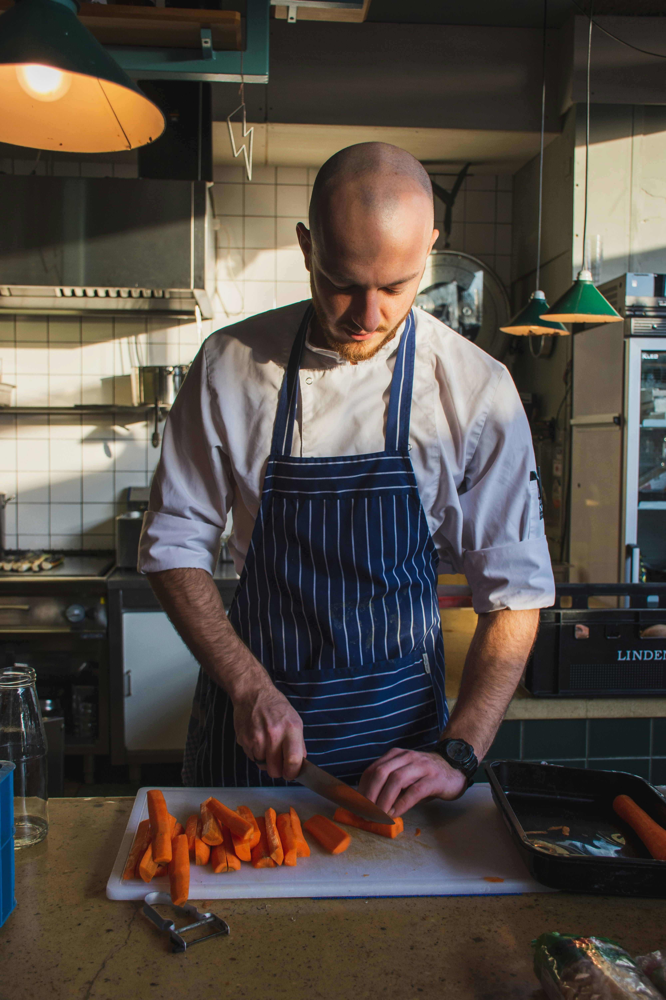
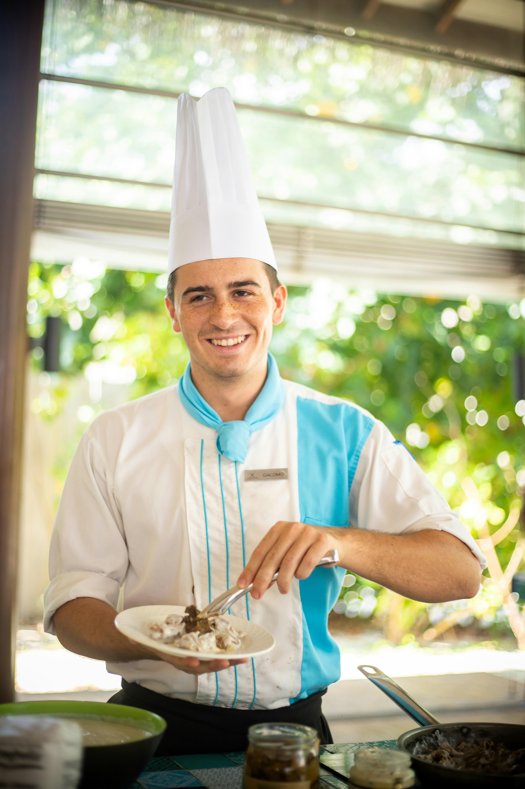
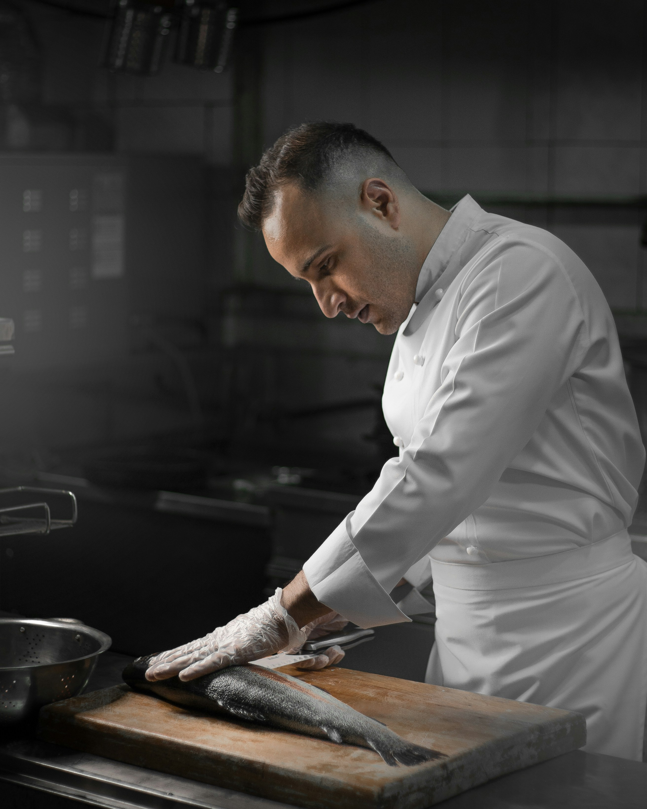

Elena Sainz
Vanguardia y tradición unidas en el plato. Especialista en productos del mar.
Conoce a los maestros de la cocina que nos acompañarán.
Vanguardia y tradición unidas en el plato. Especialista en productos del mar.

El equilibrio perfecto entre creatividad técnica y la memoria gustativa de la infancia.

La esencia de la cocina catalana llevada a la máxima expresión artística.

Embajadora de los productos de nuestra localidad.

La pasión por los platos de caza.